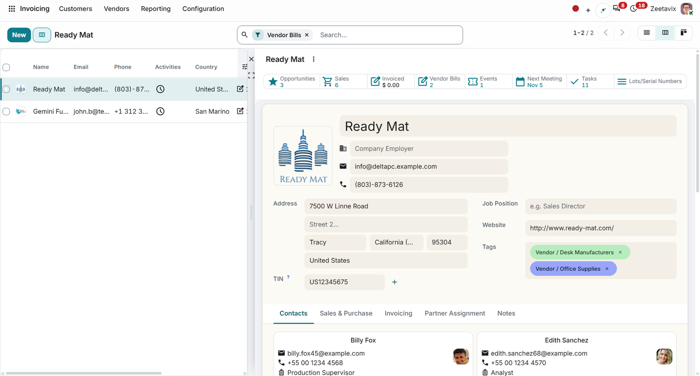
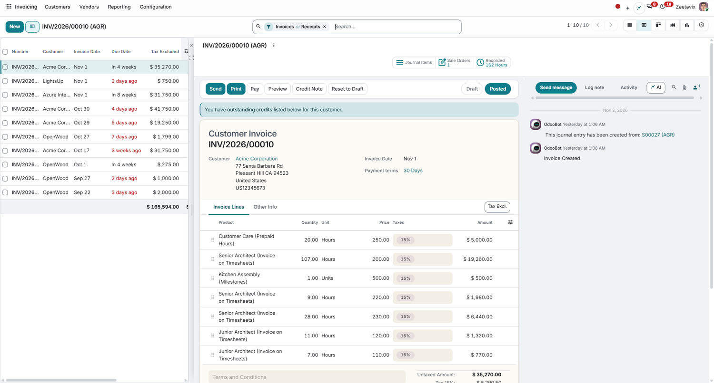

Free Odoo 20.0 Community • By Zeetavix
Any window action that already shows both a list and a form view automatically gains a third switcher entry: Split. Click a row and the record opens in a form panel docked on the right, without leaving the list. Saving, paging, deleting and creating all work in place, and the panel is resizable with the width remembered per action.

Scan on the left, work on the right. The panel renders the action's own form view — same smart buttons, same fields, same related contacts. Dirty edits are saved before switching (same semantics as the form pager); deleting a record or discarding a new one closes the panel and refreshes the list.

Invoices triage the same way: lines, taxes and totals on the form, post and pay where they always were, the chatter one glance further right. Need the full width? The expand button docks the panel full-screen with the pixel-identical stock form. Collapse to go back to triaging.
split is registered as a first-class view type, and the
Split entry is injected into every eligible action
automatically. Opt out per action with
nova_split_disable in the action context, or
globally in Settings — along with auto-open and the
default panel width. Light and dark twins ship with the
module and follow the active backend theme.